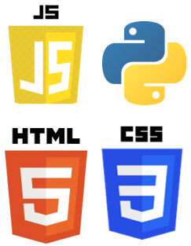

Mi propio blog de programación
Hola, esta página fue creada con un fin informativo, donde se podrán conocer temas sobre algunos lenguajes de programación, proyectos de estos lenguajes, etc...
Uno de los motivos por el que quería desde hace tiempo crear esta página ha sido el de tener un lugar donde poder subir mis proyectos, pero con el paso del tiempo me vi en la necesidad de crear algo más grande. Si... una red de información donde se puedan consultar temas de programación en específico, los cuales son los siguientes:
Lenguajes con el propósito de crear la lógica de las aplicaciones
Python
Javascript
Lenguajes especialmente creados para el desarrollo web:
HTML
CSS
Javascript
Plataformas especializadas en despliegue y almacenamiento de aplicaciones
Docker